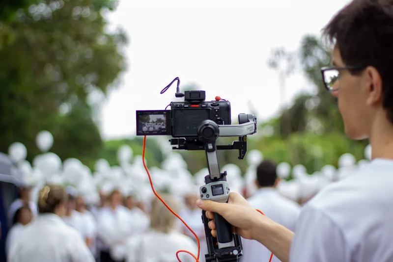

Trabalhos
Intenção
Para quem não sabe aonde quer ir, qualquer direção serve. Por isso, antes de planejar qualquer coisa, eu escuto você para entender o seu projeto a fundo.
Como eu produzo
-
Entendo o seu negócio
Quero saber o que você vende, para quem e o que precisa que as pessoas entendam depois de assistir ao vídeo e como funciona a sua empresa.
-
Posicionamento e planejamento
Defino o posicionamento, a forma de comunicação, o formato e o roteiro com você. Nada vai para a gravação sem intenção.
-
Gravação e edição
Com o roteiro pronto, gravo e edito o material. O seu único trabalho é publicar o vídeo.
Sobre mim
Antes mesmo de pensar em gravar, o conteúdo precisa de intenção.
Vejo muita gente travar na hora de fazer um vídeo porque não sabe qual caminho quer seguir. Todo vídeo precisa de uma intenção clara: vender, ganhar reconhecimento, mostrar autoridade ou simplesmente educar quem assiste. Por isso, meu objetivo é produzir conteúdo que funciona e conversa com o seu público com uma estética agradável, com ritmo leve e uma boa história.
Fale comigo pelo WhatsApp